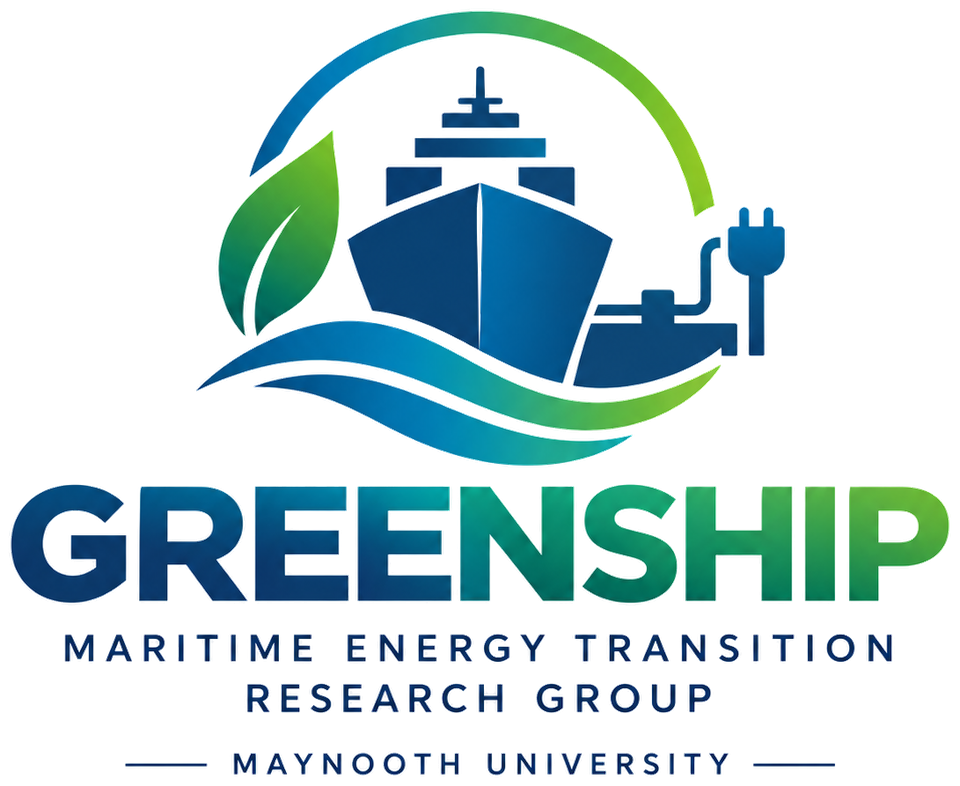
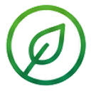
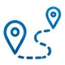
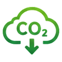
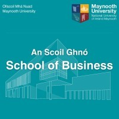
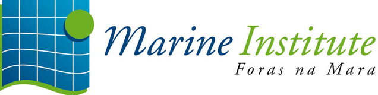

LinkedIn post
To add The first two or three sentences of the post, and its image if it has one.

Maynooth University · School of Business
We study how ships and ports can cut their emissions: which fuels make sense, where green shipping corridors can start, how to bring shore power to Irish ports, and how to plan the sector's path to carbon neutrality by 2050. We work with ports, ferry operators and public agencies around the Irish Sea.
Research themes

We compare the cost, emissions and readiness of biofuels, methanol, ammonia, hydrogen and electrofuels for Irish shipping.

We assess routes where zero-emission shipping can start first, such as Dublin–Holyhead, and build frameworks for pre-feasibility studies.
We study the costs and benefits of connecting ships at berth to shore power in Irish ports.

We build roadmaps and policy analysis to bring Ireland's maritime sector to carbon neutrality by 2050.
Report · Marine Institute · 2025
Alternative fuels, infrastructure, and policy pathways
The report sets out how Ireland's maritime industry can reach carbon neutrality by 2050. It assesses alternative fuels, the port infrastructure they need, and the rules that drive the transition, and it proposes a phased roadmap.
Featured project
A feasibility study for a green shipping corridor on the Dublin–Holyhead route, the busiest roll-on/roll-off route between Ireland and the UK. Maynooth University was the academic partner, with Irish Ferries, Stena Line, Ricardo, Dublin Port Company, Holyhead Port Authority and EDF R&D.
The draft revision of Ireland's National Ports Policy highlights our work on green shipping corridors, onshore power supply and alternative marine fuels.
Methanol was found to be the most practical alternative fuel for the route, with up to 80% lower greenhouse gas emissions.
A feasibility study led by Irish Ferries and Stena Line, funded through the International Green Corridor Fund.
To add The first two or three sentences of the post, and its image if it has one.
Updates from our projects, conferences and publications.
To add Link to the group's LinkedIn page
Host institution


Funders and partners


To add Logo file for IMDO (SVG or PNG).
Other research funding
Central Corridor project partners
Research
Our research supports the maritime industry's move to zero emissions. We combine cost modelling, life cycle assessment, stakeholder research and policy analysis, and we work closely with ports, operators and public agencies.
Which fuels make sense, and at what cost?
Where can zero-emission shipping start first?
What does it take to plug ships in at berth?
How does the sector reach carbon neutrality by 2050?
Confirm Project periods, funders and links. Add any projects that are missing.
With the Marine Institute, we are developing pathways to guide the Irish maritime industry towards carbon neutrality by 2050. The work includes stakeholder research and data analysis on potential green shipping corridors across the Irish Sea, and an assessment of the socio-economic impact of environmental policy, with a focus on alternative maritime fuels and onshore power supply.
A feasibility study for a green shipping corridor on the Dublin–Holyhead route, the busiest roll-on/roll-off route between Ireland and the UK. The study assessed low-carbon energy pathways, reviewed policy and regulation, and built a business case.
Doctoral research on how cleaner technologies can support green practices in Irish shipping. It produced cost assessments of alternative marine fuels and a cost–benefit assessment of shore-side electricity in Irish ports.
The government's draft revision of the National Ports Policy highlights our work on green shipping corridors, onshore power supply and alternative marine fuels. The work has been funded by the Marine Institute and the Sustainable Energy Authority of Ireland. Read the news story.
Publications
Peer-reviewed articles, reports, conference papers and theses from the group, newest first.
To addAny further publications from group members (BibTeX, ORCID or Google Scholar). Entries below come from Maynooth University staff profiles, MURAL and the Marine Institute Open Access Repository.
Journal article
Sivappirakasam, K., Rigot-Müller, P., & Coughlan, J. (2026). Marine fuel pathways for net-zero GHG shipping: A review of life cycle assessment evidence and policy alignment. Transportation Research Part E: Logistics and Transportation Review, 213, 104983.
Commentary
Rigot-Muller, P., Kovalenko, A., Sivappirakasam, K., & Raspotnik, A. (2026). The EU's Arctic Policy Consultation was a Success — But Not the One You Think. High North News.
To add Link to the article
Report
Rigot-Müller, P., Kovalenko, A., Sivappirakasam, K., & Coughlan, J. (2025). Transitioning Ireland's maritime sector to carbon neutrality: Alternative fuels, infrastructure, and policy pathways. Marine Institute Research for Policy Awards 2023. Marine Institute.
Journal article
Zaatar, T., Cheaitou, A., Faury, O., & Rigot-Muller, P. (2025). Arctic sea ice thickness prediction using machine learning: A long short-term memory model. Annals of Operations Research, 345.
Book chapter
Kavanagh, E., Kovalenko, A., & Rigot-Muller, P. (2025). Ireland in Arctic Research: A Growing Scientific Presence. In Arctic Yearbook 2025. Arctic Portal.
Conference paper
Sivappirakasam, K., Rigot-Muller, P., & Coughlan, J. (2025). Green Shipping Corridors potential in Northern Europe: A framework for pre-feasibility studies. International Association of Maritime Economists (IAME) Conference, Bergen, Norway, 24–27 June 2025.
Conference presentation
Kovalenko, A., Sivappirakasam, K., Rigot-Muller, P., & Coughlan, J. (2025). Economic impact of EU emission initiatives for alternative fuel transition in the Irish maritime industry. SIGA2 Conference, Antwerp, 7–9 May 2025, and Irish Transport Research Network Conference, Trinity College Dublin, 28–29 May 2025.
Journal article
Fedi, L., Faury, O., Etienne, L., Cheaitou, A., & Rigot-Muller, P. (2024). Application of the IMO taxonomy on casualty investigation: Analysis of 20 years of marine accidents along the North-East Passage. Marine Policy, 162, 106061.
Journal article
Gore, K., Rigot-Muller, P., & Coughlan, J. (2023). Cost-benefit assessment of shore side electricity: An Irish perspective. Journal of Environmental Management, 326, 116755.
PhD thesis
Gore, K. (2023). Facilitating "green practices" within the Irish maritime industry from use of cleaner alternative technologies. PhD thesis, Maynooth University.
Journal article
Gore, K., Rigot-Muller, P., & Coughlan, J. (2022). Cost assessment of alternative fuels for maritime transportation in Ireland. Transportation Research Part D: Transport and Environment, 110, 103416.
Nothing listed in this category yet.
Team
Researchers at the Maynooth University School of Business working on the maritime energy transition.
Group leader
Photo
Assistant Professor, Operations and Supply Chain · School of Business
Patrick coordinates the Sustainability and Climate Change research beacon in the School of Business. His research covers ports and maritime transport, alternative fuels, Arctic shipping and sustainable supply chains. He has led Marine Institute and SEAI-funded work on decarbonising Irish shipping and electrifying ports, and Maynooth's part in the Dublin–Holyhead green shipping corridor study. This work is highlighted in the 2026 draft revision of Ireland's National Ports Policy.
Before Maynooth he worked at Normandy Business School, Newcastle University and the University of Hull, where he joined the Low Carbon Shipping project. He holds a PhD in Industrial Engineering from Mines de Paris.
Confirm Role as group leader. Bio drafted from Patrick's Maynooth profile.
Current members
Postdoctoral Research Fellow
Alina works with the Marine Institute on decarbonisation pathways for the Irish maritime industry. She coordinates the project, leads stakeholder research and analyses data on potential green shipping corridors across the Irish Sea. She holds a PhD in Business (transport economics and maritime logistics) from Nord University, where she was a PhD Research Fellow at the Centre for High North Logistics, and an MSc in Logistics from Molde University College. Her interests include ports and maritime logistics, sustainable shipping and Arctic shipping.
Confirm role
Ketan's PhD at Maynooth University (2023) examined how cleaner alternative technologies can support green practices in the Irish maritime industry. His published work covers cost assessments of alternative marine fuels and of shore-side electricity in Irish ports.
Confirm role
Kamalakkannan works on life cycle assessment of marine fuels, green shipping corridors and the economic effects of EU emission rules on Irish shipping. He is lead author of a 2026 review in Transportation Research Part E on marine fuel pathways for net-zero shipping, and co-author of the group's 2025 Marine Institute report. To add Degrees and background.
To add
For each further member: name and degrees, role and project, a bio of 80–200 words, a square photo, and links to Google Scholar, ORCID, ResearchGate or LinkedIn.
Past members
To addFormer researchers and students, with their role in the group and where they are now (optional).
Contact
We welcome contact from industry, ports, public bodies and prospective students who share an interest in greener shipping.
Address
GREENSHIP: Maritime Energy Transition Research Group53.381°N 6.592°W
Work with us
If you are interested in a PhD or postdoctoral position, or want to explore a joint project on maritime decarbonisation, please email the group with a short description of your interests.
Confirm Office location for the group, and whether to list open positions here.